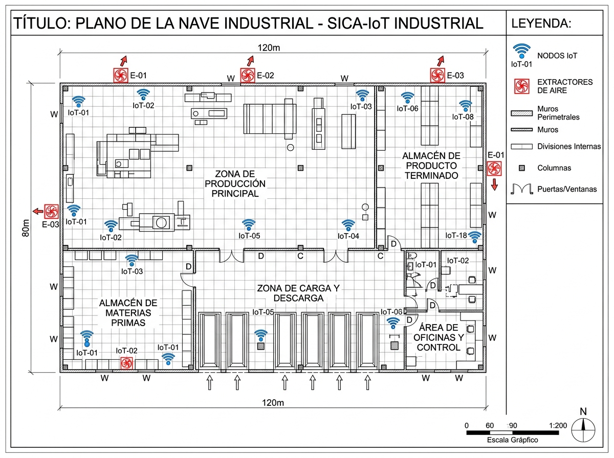

Sistema web de monitoreo y control automatizado de CO₂, temperatura y humedad para naves industriales, con sensores IoT, alertas en tiempo real y extractores que reaccionan solos.
La maquinaria pesada restringe la ventilación natural. El CO₂ y el calor se acumulan, y los operadores de las líneas de ensamble lo sienten.
El calor de equipos y personal se queda atrapado en la nave y baja el rendimiento del turno.
La mala ventilación eleva la concentración de gases y provoca dolores de cabeza en operadores.
Se requiere cumplir con las NOM de la STPS en condiciones térmicas y agentes contaminantes.
Cada lectura viaja por un flujo validado y transaccional. Si supera el umbral de seguridad, el sistema actúa sin intervención humana.
ESP32 con sensores de CO₂, temperatura y humedad
FastAPI recibe y llama al procedimiento
sp_registrar_lectura_industrialValida y guarda en transacción
trg_verificar_umbral_criticoGenera alerta y activa relevadores
vw_alertas_activas_zonaAlerta visual para el supervisor
Visualiza el plano de la planta y detecta las zonas críticas de un vistazo.
Avisos de ventilación o evacuación cuando se rebasan los umbrales normativos.
Los extractores industriales se activan por relevadores sin parar la producción.
Gerencia, Supervisor y Mantenimiento con permisos y vistas distintas.
Reportes de seguridad y promedios por turno para tomar decisiones.
Pensado para fallas de red en planta, con alta disponibilidad y seguridad.
Producción principal, almacén de materias primas, producto terminado, carga y descarga, y oficinas de control.

Modelo normalizado a 3FN, transacciones ACID con rollback, bloqueos optimistas, índices B-Tree, roles con privilegios estrictos y vistas para dashboards.
Scrum, modelado UML, arquitectura API REST con patrón MVC, mockups, plan de pruebas unitarias, de integración y de aceptación.
-- Disparador: se ejecuta después de cada lectura CREATE TRIGGER trg_verificar_umbral_critico AFTER INSERT ON lecturas FOR EACH ROW EXECUTE FUNCTION fn_verificar_umbral(); -- Si CO₂ supera el límite: crea alerta y activa extractor
Proyecto completo con modelos UML y diccionario de datos.
Tablas, datos de prueba, vistas, procedimientos, disparadores e índices.
Tiempos de consulta antes y después de los índices.
Repositorio Git con política de ramas y estándares.
Pruebas de software y hardware.
Simulación operativa de la nave industrial.
Asesor: M. en C. José Torres Medina · Universidad Autónoma Indígena de México